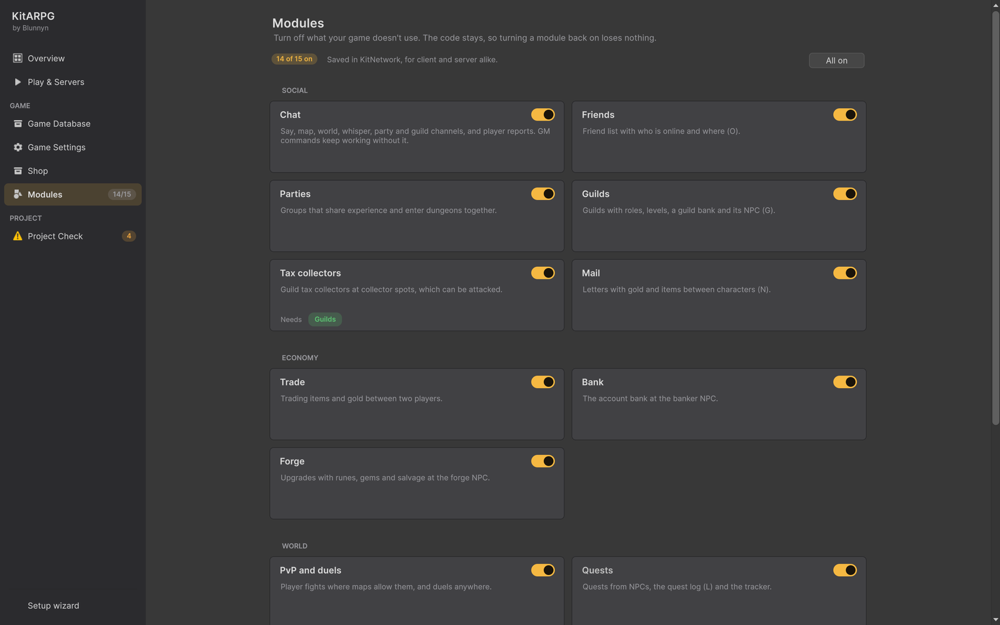

Modules
Modules are the kit's optional systems, such as guilds, mail, the market or the in-game shop. The Modules page turns each one on or off for your game. A module that is off disappears from the game: its windows, buttons, menu lines and NPC options hide, and the server refuses its requests. The code stays in the project, so turning a module back on loses nothing.
Where it is
- KitARPG > Modules, or
- the Modules page in the KitARPG window (
Ctrl/Cmd+Shift+K).
When some modules are off, the sidebar shows how many are on, for example 13/15.
The page

The top row has:
- A pill with the count, such as 15 of 15 on (green when all are on).
- "Saved in KitNetwork, for client and server alike." The choice lives in the Game Instance of the network prefab, in the field
disabledModules, so client and server builds agree. - All on, which turns every module back on.
Under it, the modules in cards, grouped. Each card has the module name, a switch at the top right and a short description. A module that is off is drawn faded. Modules that need another one show Needs and that module's name in a pill, green when it is on and red when it is off. The cards are in two columns, or one when the window is narrow.
If no Game Instance is found, the page shows No GameInstance found with Open the setup wizard.
Modules can't be changed in Play mode. The switches are greyed out and the page says "Stop Play to change modules."
Every module
All modules are on by default.
Social
| Module | What it is | What turning it off does |
|---|---|---|
| Chat | Say, map, world, whisper, party and guild channels, and player reports | The server refuses chat lines and the chat box tells the player "Chat is off in this game. Commands start with /." The Report line of the player menu hides. GM commands keep working |
| Friends | Friend list with who is online and where (O) | The friends window and toolbar button hide, the player menu loses "add friend", and the server ignores friend requests |
| Parties | Groups that share experience and enter dungeons together | Party frames and the invite and kick lines of the player menu hide, and the server ignores party requests |
| Guilds | Guilds with roles, levels, a guild bank and its NPC (G) | The guild and alliance windows and the toolbar button hide, guild invites leave the player menu, guild NPC options (guild bank, founding, guild hall) hide and the server refuses guild requests. Also turns off Tax collectors |
| Tax collectors | Guild tax collectors at collector spots, which can be attacked. Needs Guilds | Collector spots and their NPC option hide and no collectors are placed |
| Letters with gold and items between characters (N) | The mail window, its toolbar button and mailbox NPC options hide, and the server refuses mail. Also turns off Market and In-game shop, which deliver by mail |
Economy
| Module | What it is | What turning it off does |
|---|---|---|
| Trade | Trading items and gold between two players | The trade line of the player menu hides and the server ignores trade requests |
| Bank | The account bank at the banker NPC | The banker option hides and the server answers "That isn't part of this game." |
| Forge | Upgrades with runes, gems and salvage at the forge NPC | The forge option hides and the server refuses forge actions |
World
| Module | What it is | What turning it off does |
|---|---|---|
| Quests | Quests from NPCs, the quest log (L) and the tracker | Quest options on NPCs, the quest log, its toolbar button and the tracker hide, and the server refuses quest actions |
| PvP and duels | Player fights where maps allow them, and duels anywhere | Players can't fight each other anywhere, and the duel line of the player menu hides |
| Day and night | The game clock and night lighting | The clock stops: it is always the fixed hour set in Game Settings |
Other
| Module | What it is | What turning it off does |
|---|---|---|
| Market | Players sell to each other at the market NPC; the gold comes by mail. MMO only. Needs Mail | The market option hides and the server refuses market requests |
| In-game shop | Offers for a premium currency the account holds, run by the Shop service and opened from the HUD anywhere (P). Bought items go to the bag, or wait in the mail when it is full. MMO only. Needs Mail | The shop button and window hide. The Shop page turns this module on and off with its own switch |
| Bestiary | Every monster with its stats, where it lives and what it drops, with each item's chance (B) | The bestiary window and its toolbar button hide |
When a player asks for something that is off, for example through a command, the answer is "That isn't part of this game."
Modules that need others
Turning modules on and off keeps the needs consistent by itself:
- Turning a module on also turns on what it needs. Turning on Market turns on Mail.
- Turning a module off also turns off what needs it. Turning off Mail turns off Market and In-game shop; turning off Guilds turns off Tax collectors.
| Module | Needs |
|---|---|
| Tax collectors | Guilds |
| Market | |
| In-game shop |
Step by step: leave a system out of your game
- Stop Play mode.
- Open KitARPG > Modules.
- Flip the switch of the module. Check the cards whose Needs pill turned red: they were turned off with it.
- Single player: press Play to check that the system is gone.
- MMO: rebuild the map server and the client, then restart the services from Play & Servers. Both builds must have the same modules.
Single player and MMO
- Market and In-game shop are MMO only: they need Central and the Shop service. In single player they have no effect whether on or off.
- In MMO the map server and the clients read the modules from their builds. A client built with a module on and a server built with it off shows the button, but the server refuses the request.
In code
GameInstance.Has(KitModule.Guilds) tells you whether a module is on. Your own NPC options can say which module they belong to so they hide with it. See NPC options and Player systems.
Tips
- Turn off what your game doesn't use before you ship. Fewer windows make the game easier to learn.
- Turning a module off doesn't delete saved data. Guilds, letters and bank items stay in the database and come back when the module is turned on again.
Common mistakes
- Turning off Mail and wondering where the market went. Market and In-game shop need Mail and go off with it.
- Changing modules and testing an old build. Rebuild the map server and the client after every change.